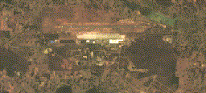
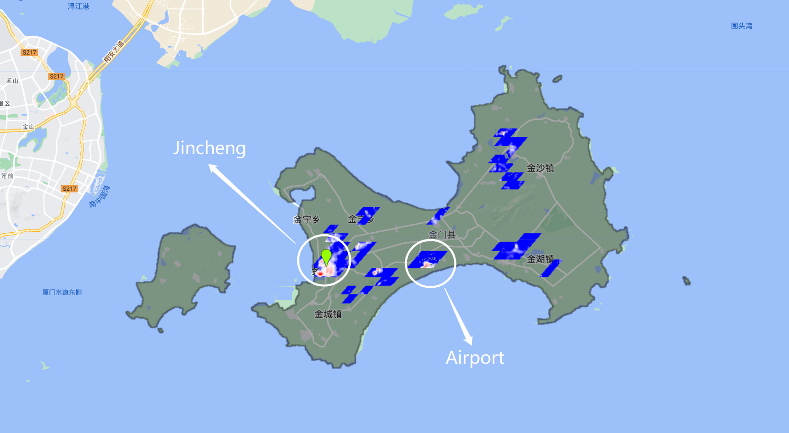

5 Google Earth Engine
Week5: 7&9/Feb/2024
This week Google Earth Engine (GEE) is introduced. It is a geospatial processing service like SNAP/QGIS (but somehow more powerful), analyzing near Earth’s surface at any space at scale. This section describes some basic concepts and functions of GEE and its limitations. An example of GEE application is included in Application section.
5.1 Summary
- Server vs. Client
-
Server is like the back-end of GEE, responsible for data storage, including Earth Engine Objects. On the other hand, client is the browser/interface of GEE, including polygons imported from local.
5.1.1 Scale
Imagery is pre-processed (cut into 256x256 tiles in original projection and resolution) (Gorelick et al. 2017). Scale is related to the spatial resolution/pixel of the datasets. The scale of Landsat-8 10m and 30m has the same value because the nominal/native resolution of Landsat-8 is at 30m. For different purpose of analysis, the resolution / scale would be different. Continental level analysis may use coarse scale and forest/tree placement may require fine scale.
As scale can be influenced by zoom levels, it should be set to ensure the consistency of the values across analysis (explore pixel resolution values at different scales > set pixel resolution when Map.addLayer).
5.1.2 Filter
Imagery (raster data) can be filtered by date / by location (specified path and row)/boundary/polygon (imported shapefile or drawn manually) (similar to st.join/st.intersect) / by bands. Feature (vector/polygon) can also be filtered by ID/attributes usually.
5.1.3 Map
Not looping. Load the image collection once and repeat the calculation/function for each image.
5.1.4 Reducer
Reducer is like conducting zonal statistics in QGIS (similar to groupby in R). It summarizes lots of images into one image composite through specified methods (Cardille et al., n.d.). For example:
By median of the pixels in collections -
By geographical boundary -
Image.reduceRegion: one boundary (e.g. GLA boundary)Image.reduceRegions: sub-divided regions within a boundary (e.g. Boroughs within GLA boundary) - more like zonal statistics.
5.1.5 Join
Combine data/elements from different collections. Join can be applied to 2+ datasets (e.g. Landsat and Sentinel), data in different time series, etc. An equal filter ee.Filter.equals() will be used for matching different data.
5.1.6 Risks/limitations of GEE
5.2 Application
This section demonstrates some applications utilizing the benefits of GEE in analyzing changes through timelapse and comparing across locations.
5.2.1 Built-up area / urban expansion
- GIF of the urbanization trajectories using Landsat 8 Level 2 Tier 1 (Wang et al., n.d., chap. A1.2)

Following the practical by (Wang et al., n.d., chap. A1.2), the above GIF (GEE code here) shows the 2010-2020 changes in the area of the Kempegowda International Airport in India visually (its now the fourth busiest airport in the country). Then it would be helpful to quantify the change in the areas by classification.
- Urban / LCLU classification (also detailed in two following weeks’ chapters)
Many datasets are available, with different coverage and properties. The MODIS Land Cover Type Yearly Global can be used to map the changes in urban areas (it is the global dataset!) (Wang et al., n.d., chap. A1.2)
Once the urban/built-up area is classified, the result could be further integrated into analysis on urbanization challenges like UHI, flooding…
5.2.2 Urban Heat Island (UHI)
MODIS & Landsat (EE LST toolbox) can both be used to calculate land surface temperature (LST) (Wang et al., n.d., chap. A1.5). Since surface UHI can be quantified as the urban temperature subtracts rural reference, the rural/urban classification in the previous section can be applied to 1) mask the urban area for analysis and 2) calculate the difference between urban and rural LST.

With reference to (Wang et al., n.d., chap. A1.5), the above map (GEE code here) shows the spatial variability in Surface UHI in summers between 2014 and 2019 for Kinmen County using Landsat-8. (Red pixels: higher (diff.max=8°C); blue pixels: lower (diff.min=2°C). Summer temperature is used here to avoid the difference in seasons balancing out the peak values. The built-up area (shown as all the colored pixels) is quite small, as the county is still urbanizing slowly with a population of 140,843 within a 151.6 km2 area in 2022 as per Wikipedia. Arguably, this city with limited ‘urban sprawl’ might not be a proper site for analyzing UHI. However, the intensity of UHI is high in the most populous town Jincheng (with population density of 1,946 ppl/km2, whereas the whole county’s density is 929 ppl/km2). Plus, the usual residents is 40% of the total census population in the county. The elderly who live alone take up a large share of the usual residents. High temperature in the urban areas may increase the threats to those vulnerable groups.
Another hot-spot is in the central-south of the island which is the location of the Airport. More specifically, that is the location of the Airport hall, bus stops, taxi and car park, while the runway of the Airport is not classified as urban by MODIS (yet the LST is also high on runway). High reflectance of the road and building material, the absence of trees and vegetation and the high volume of GHG emissions may contribute to the high temperature in this area compared to its rural neighbours.
5.2.3 Earth Engine APP
A range of pre-processed / classified GEE models are openly shared here. With the benefit of displaying large data and information quickly, the interaction between users and data is enhanced. Some excellent examples/techniques/visualisations to learn from e.g. using sliders to change the year / cities / show before-after comparison, etc..
5.3 Reflection
From the analysis on UHI in Kinmen, one lesson learnt is that UHI mitigation should not focus on large urbanized areas only. When considering the local context, some rural locations (e.g. based on low population density) with high urban infrastructure or poor building material may similarly associate with high changes/difference in temperature (albeit land surface temperature might not be identical to the ambient temperature). Those areas are usually lack of proper regulation or with some vulnerable groups. Hence, government and planners should not left those areas behind when making national plans. The local authorities, communities and researchers may work together to achieve high resilience.
When calculating the UHI, several familiar concepts from week 1 reoccur like the different surface reflectance for materials being sampled to determine the land cover type - done by the MODIS dataset. The transformation of the data where the brightness temperature and emissivity (based on fractional vegetation cover from NDVI) are combined to find LST - done by the EE toolbox/module within a few steps.